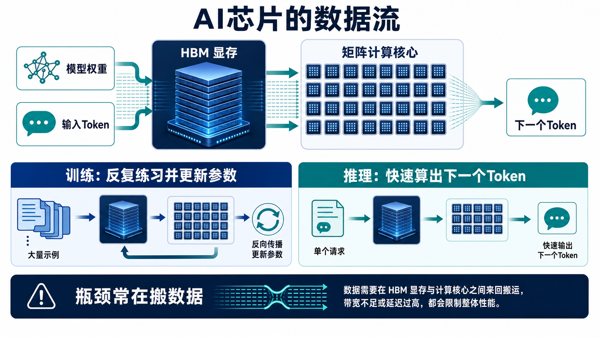

AI芯片
为什么大模型离不开专用算力？
核心一句话：AI芯片的本质，是把大模型里海量、重复、可以并行的小计算，用专门设计的硬件高效做完。
1. 为什么这个概念重要？
如果说大模型是“会思考的城市”，AI芯片就是这座城市的发电站、道路和工厂。没有足够合适的芯片，大模型可以写在论文里，却很难每天服务几亿次请求。
它解决的问题：算不过来
大模型不是靠一句“灵感”生成答案，而是在每一步里做海量数字计算。普通CPU很灵活，但像让一个全能老师同时批改百万份相似作业，效率不够。
行业离不开它：成本决定普及
同一个模型，如果回答一次要花很多电和时间，它就只能给少数人用。AI芯片让训练更可行，让推理更便宜，决定AI能不能进入搜索、办公、客服、汽车和手机。
它改变的东西：AI从实验变成基础设施
过去我们谈“软件吞噬世界”。今天，大模型能否落地，常常取决于数据中心能不能稳定提供算力、显存、网络、散热和电力。
一个现实判断：AI竞争不只是“谁的模型更聪明”，也包括“谁能用更少成本、更低延迟，把聪明模型服务给更多用户”。
2. 一个直观类比：AI芯片像中央厨房
想象一家城市级外卖平台。每天中午，几百万份“番茄炒蛋盖饭”同时下单。你不能让一个厨师按顺序一份一份做，因为队伍会排到晚上。
更合理的办法是建一个中央厨房：总厨负责调度，很多灶台同时开火，旁边有高速仓库不断送来食材，传送带把半成品送到下一个工位。AI芯片做的事情很像这个系统。
| 中央厨房里 | AI系统里 | 直觉理解 |
|---|---|---|
| 总厨 | CPU | 负责安排流程、处理杂事、协调系统，但不适合独自做海量重复计算。 |
| 成百上千个灶台 | GPU、TPU、NPU | 擅长把相似的小计算分给大量计算单元同时完成。 |
| 离厨房很近的食材仓库 | HBM显存 | 模型权重和中间结果要快速取用，仓库太远就会拖慢整条线。 |
| 传送带与分拣系统 | 芯片互联与网络 | 多颗芯片一起工作时，数据交换速度会影响整体效率。 |
3. 工作原理：AI芯片到底在忙什么？
大模型看起来在“读文字、写文字”，底层其实在做三件朴素的事：把词变成数字，把数字矩阵反复相乘，再把结果变回下一个Token。

第一步：文字先变成数字
“今天下雨吗？”会先被切成Token，再变成一串向量。芯片处理的不是汉字本身，而是这些数字表示。
第二步：模型权重从显存取出来
模型权重像一本超大的菜谱。每生成一个Token，都要查很多页菜谱，所以显存容量和带宽非常重要。
第三步：大量矩阵计算同时执行
神经网络很多层都可以看成矩阵乘法、点积、加法和激活函数。GPU/TPU/NPU的优势，就是把这些相似计算并行展开。
第四步：输出下一个Token
大模型不是一次写完整篇文章，而是先预测下一个Token，再把它放回上下文里，继续预测下一个。
第五步：多用户请求排队调度
真实服务里不是一个人在问问题，而是很多人同时请求。系统要批处理、排队、缓存、负载均衡，才能做到又快又省。
训练和推理有什么不同？
训练：像学生反复刷题
训练时，模型看大量样本，算出答案，和标准答案比较，再通过反向传播调整参数。这需要巨量算力、长时间运行和多芯片协作。
推理：像考场快速作答
推理时，模型参数通常固定，目标是尽快响应用户。它更关心延迟、吞吐、显存占用、KV Cache和单位Token成本。
4. 关键术语解释
专业解释：一种拥有大量并行计算单元的处理器，常用于图形渲染、科学计算和深度学习。
白话解释：它像很多工人一起做相似的活，特别适合大模型里重复的数字计算。
专业解释：面向机器学习或神经网络推理/训练优化的专用或半专用加速器。
白话解释：它们像为AI厨房定制的专用灶台，不一定什么菜都能做，但做AI这类菜更顺手。
专业解释：深度学习中全连接层、注意力计算、卷积等操作的重要基础计算形式。
白话解释：模型把很多数字表格不断相乘，从里面提取规律，决定下一步怎么回答。
专业解释：靠近计算芯片、带宽很高的显存技术，用于快速供给模型权重和中间数据。
白话解释：它像建在灶台旁边的高速仓库，食材送得越快，厨师越不容易空等。
专业解释：单位时间内能搬运的数据量，是影响大模型训练和推理性能的重要指标。
白话解释：路越宽，货车越多，数据越不容易堵在路上。
专业解释：从请求发出到得到响应所需的时间，推理服务尤其关注。
白话解释：你问AI一句话，它多久开始回答、多久答完，这就是用户能感受到的速度。
专业解释：系统单位时间内能处理的请求数或Token数。
白话解释：一家餐厅一分钟能出多少份餐，不只看单份快不快，也看能不能批量处理。
专业解释：用更少位数表示数字，以降低存储和计算成本，同时尽量保持模型效果。
白话解释：有些场景不需要用“精确到小数点后很多位”的尺子，粗一点反而更快更省。
5. 一个真实应用案例：ChatGPT类产品如何用AI芯片服务用户？
当你在聊天框输入“帮我写一封请假邮件”，背后并不是一台电脑从头想。更接近下面这个流程：
请求进入服务器
系统先做安全检查、路由和排队，把请求分配给合适的推理集群。
模型权重常驻显存
为了避免每次都从硬盘慢慢读取，模型的主要权重会尽量放在GPU/TPU/NPU附近的显存里。
计算核心预测Token
芯片不断读取权重和上下文，做矩阵计算，输出下一个Token的概率分布，再选择要写出的Token。
系统边算边返回
你看到文字一个字一个字出现，是因为模型在连续生成Token。好的芯片和调度系统能降低等待感。
成本被摊到每个Token
云厂商和AI公司关心“每生成100万Token要花多少钱”。这就是为什么芯片、显存和推理优化会直接影响产品价格。
所以，AI芯片不是离普通人很远的“硬件新闻”。它会影响你能不能用到更便宜、更快、更长上下文、更稳定的AI服务。
6. 常见误区
误区一：AI芯片越贵，模型一定越聪明
芯片提供的是“计算能力”，不是自动带来“理解能力”。模型架构、数据质量、训练方法、对齐策略同样重要。
正确理解
好芯片像好厨房。它能让好厨师更快做菜，但不会把坏菜谱自动变成美食。
误区二：GPU只是“显卡”，和AI关系不大
早期GPU为图形而生，但它的并行计算特点正好适合深度学习。今天的数据中心GPU已经是AI基础设施的核心组件。
正确理解
名字叫“图形处理器”，但现代GPU早已是通用并行计算平台，深度学习只是其中最重要的应用之一。
误区三：只要算力够，AI回答就会无限快
推理还会被显存带宽、网络、排队、上下文长度、KV Cache、批处理策略限制。
正确理解
餐厅不是灶台越多就一定越快。如果食材配送、传菜、点单系统堵住，顾客还是要等。
误区四：训练芯片和推理芯片是同一件事
训练更像长期大规模学习，推理更像高并发服务。两者都需要算力，但优化目标不同。
正确理解
训练看重总算力、稳定性和多芯片协作；推理更看重延迟、吞吐、显存效率和单位成本。
7. 3句话总结
8. 复习问题
- 为什么GPU/TPU/NPU比CPU更适合大模型里的大量矩阵计算？请用“中央厨房”的类比解释。
- 如果一颗芯片算得很快，但显存带宽很低，为什么大模型推理仍然可能很慢？
- 训练和推理都需要AI芯片，但它们优化的目标有什么不同？请各举一个现实指标。
资料依据
- NVIDIA Deep Learning Performance: Matrix Multiplication Background User's Guide
- NVIDIA Deep Learning Performance: GPU Performance Background User's Guide
- Google Cloud Documentation: Introduction to Cloud TPU 与 TPU architecture
- AWS Documentation: Recommended Trainium Instances 与 Recommended Inferentia Instances
- AMD: AMD Instinct Accelerators